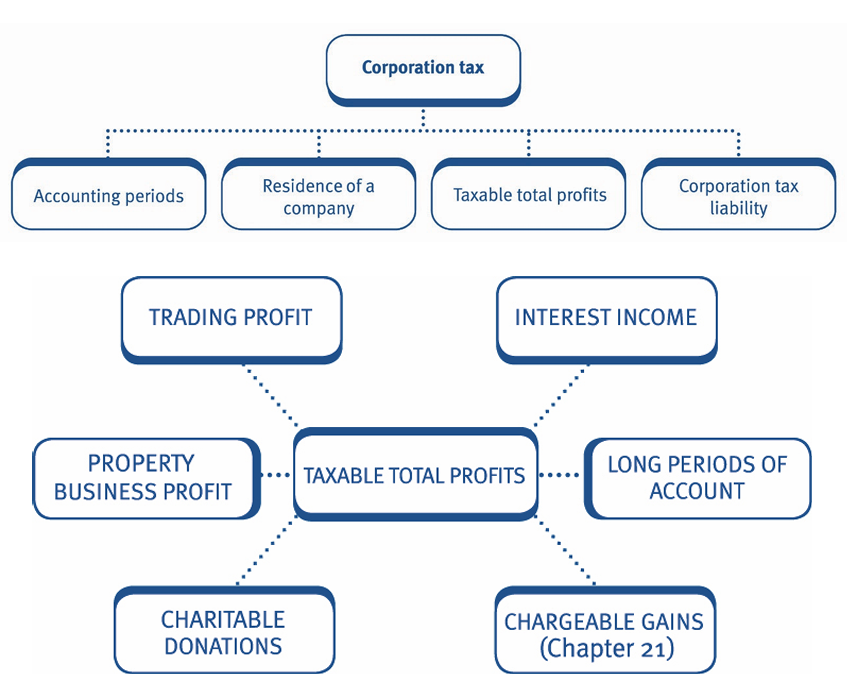
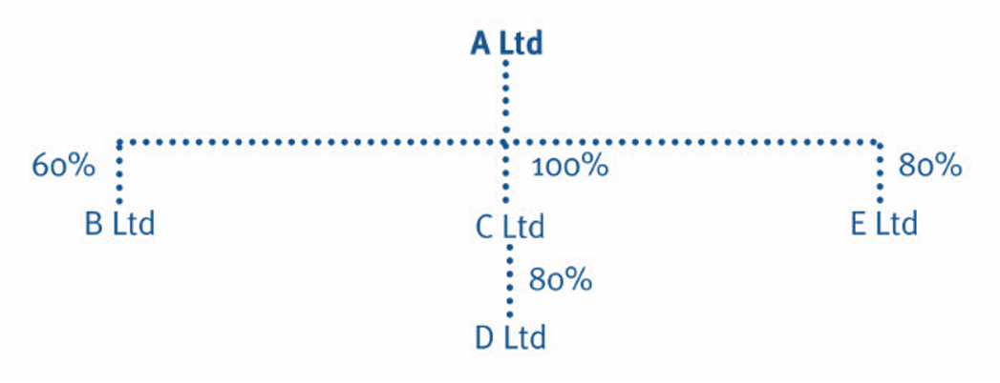
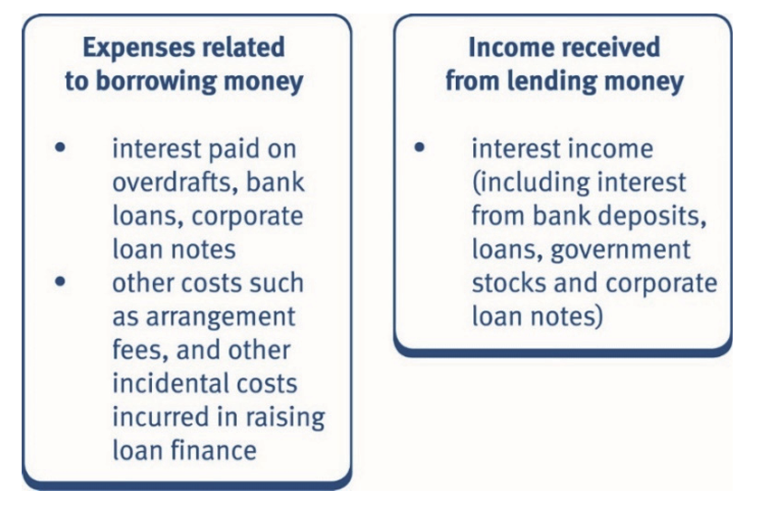

Chapter 13: Corporation tax
Define the terms ‘period of account’, ‘accounting period’, and ‘financial year’.
Recognise when an accounting period starts and when an accounting period finishes.
Explain how the residence of a company is determined.
Compute taxable total profits.
Compute the corporation tax liability and apply marginal relief.
Recognise the expenditure that is allowable in calculating the tax adjusted trading profit.
Recognise the relief which can be obtained for pre-trading expenditure.
Compute capital allowances as for income tax, for purchases and disposals of assets on which the 100% and 50% first year allowances have been claimed and for disposal of assets on which the main pool super deduction of 130% and special rate pool first year allowance of 50% for expenditure incurred from 1 April 2021 to 31 March 2023 were claimed.
Compute property business profits.
Recognise and apply the treatment of interest paid and received under the loan relationship rules.
Recognise and apply the treatment of qualifying charitable donations.

Basis of assessment
• Corporation tax is assessed on a company’s taxable total profits arising in an accounting period. • The accounting period is not necessarily the same period as the company’s set of accounts (period of account).
It is important when dealing with corporation tax to understand the terms ‘period of account’ and ‘accounting period’.
1. Period of account
A period of account is any period for which a company prepares accounts. It is usually 12 months in length, but may be shorter or longer than this.
2. Accounting period
An accounting period (AP) is the period for which a charge to corporation tax is made. It is never longer than 12 months.
Accounting periods
When does an AP start?
An AP starts:
- When a company starts to trade (or receives income chargeable to corporation tax), and
- When the previous accounting period ends.
When does an AP end?
The main situations where an AP ends are:
- twelve months after the beginning of the accounting period
- the end of the company’s period of account, and
- the date the company begins or ceases to trade.
Note that the date on which a company’s period of account ends is often referred to in the examination as the accounting reference date. It can also be referred to as the accounting date.
Long periods of account
For corporation tax purposes, an AP can never exceed 12 months.
Therefore, if a company prepares accounts for a period of more than 12 months, there are two accounting periods for tax purposes.
The long period of account is divided into APs as follows:
- First AP: first 12 months of long period
- Second AP: the balance of the long period.
Choice of accounting reference date
A company can choose any accounting reference date, however there are certain tax advantages to having an accounting reference date of 31 March:
- Being aligned with the financial year makes it easier for a company to calculate its corporation tax liability, since the same reliefs and legislation will apply throughout the accounting period.
- For owner-managed companies, alignment with the income tax year (the odd five days can be ignored) makes it easier to calculate the most tax efficient method of extracting profits from the company for the individual owners.
The tax residence of a company
Companies resident in the UK are chargeable to corporation tax on all profits (i.e. income and chargeable gains) wherever they arise (i.e. on worldwide income and gains).
It is therefore important to correctly determine where a company is resident.
Determining residence
A company is UK resident if it is:
- incorporated in the UK, or
- incorporated elsewhere, but is centrally managed and controlled in the UK.
A company that is incorporated in the UK is resident in the UK regardless of where it is centrally managed and controlled.
Example 1: The tax residence of a company
X Ltd is incorporated in the UK. The directors hold monthly board meetings overseas when major policy decisions are made.
Y Ltd is incorporated overseas. The directors hold frequent board meetings in the UK, which is where the directors are based.
Z Ltd is incorporated overseas. The directors hold weekly meetings overseas, but have quarterly meetings in the UK because this is where the non-executive directors are based.
Explain for each company whether they will be treated as UK resident.
Solution
- X Ltd is resident in the UK. If a company is incorporated in the UK it is irrelevant where meetings are held and decisions are made.
- Y Ltd would probably be treated as resident in the UK for corporation tax purposes. Although not incorporated in the UK, it would appear that the company is centrally managed and controlled from the UK.
- Z Ltd would probably not be treated as resident in the UK. The company is not incorporated in the UK, and it appears to be centrally managed and controlled from overseas.
Example 2: Resident corporation
Mill Ltd is incorporated in France but holds all its board meetings in Germany. Its directors live in the UK most of the year.
Marble Ltd is incorporated in Italy but holds its monthly board meetings in London. Other interim board meetings are held in Italy, where some of the directors are based. Most of the directors are based in the UK.
Lamb Ltd is incorporated in the UK. Board meetings are held in France.
Explain for each of the above companies whether they will be treated as resident in the UK for corporation tax purposes.
Solution
- Mill Ltd would not be treated as resident in the UK. The company is not incorporated in the UK, and it appears to be centrally managed and controlled from overseas. The rules in each of the overseas countries in question would have to be reviewed to determine whether Mill Ltd is considered resident in those countries.
- Marble Ltd would probably be treated as resident in the UK for corporation tax purposes. Although not incorporated in the UK, it would appear that the company is centrally managed and controlled from the UK as its monthly board meetings are held in London and the majority of directors are based here.
- Lamb Ltd is resident in the UK as it is incorporated in the UK. It is therefore irrelevant where meetings are held and decisions are made.
Taxable total profits
• A company’s taxable total profits for an accounting period are total profits from all sources, less qualifying charitable donations (QCDs). • Taxable total profits (TTP) = Total profits – Qualifying charitable donations • A company’s total profits are worldwide income (excluding dividends) plus net chargeable gains. • The pro forma below sets out the different sources of income included in total profits.
Layout of a corporation tax computation
| 2025/26 (£) | |
|---|---|
| Tax adjusted trading profit | × |
| Non-trade loan relationship (NTLR) income | × |
| Property income | × |
| Miscellaneous income | × |
| Chargeable gains | × |
| Total profits | × |
| Less: Qualifying charitable donations (QCD) | (×) |
| Taxable total profits (TTP) | × |
Tax adjusted trading profit
Assesses all trading income net of trading expenditure.
Non-trade loan relationship income
Assesses all interest receivable net of some interest payable.
Property income
Assesses the profit (or loss) from letting furnished or unfurnished property and is calculated on the accruals basis.
Miscellaneous income
Patent royalties receivable in respect of non-trade related patents would be included here.
These are obscure and unlikely to appear in the TX examination.
Dividends
Dividends received from UK and overseas companies are exempt from corporation tax and are therefore excluded from the TTP computation. Only UK dividends are examinable in the TX examination.
Chargeable gains/losses
Corporation tax is also charged on any chargeable gains that arise on chargeable disposals made by the company during an accounting period.
Chargeable gains for companies are covered in detail in Chapter 21.
It is essential to understand that companies pay corporation tax on their chargeable gains, not capital gains tax.
Qualifying charitable donations
All donations to charity by a company (except those allowed as a trading expense) are an allowable deduction from total profits in a corporation tax computation.
The relief is referred to as ‘qualifying charitable donations (QCD) relief’.
All charitable donations by a company are paid gross.
Note that the tax treatment of donations to charity made by a company is different from that applied to payments made by an individual.
Example 1: Taxable total profits
Westmorland Ltd has the following income and outgoings for the year ending 31 March 2026.
| 2025/26 (£) | |
|---|---|
| Tax adjusted trading profit | 1,456,500 |
| Property income | 25,000 |
| Interest receivable | 10,000 |
| Chargeable gains | 35,000 |
| Dividends from UK companies | 14,400 |
| Qualifying charitable donations (QCD) | (10,000) |
Compute the taxable total profits for the y/e 31 March 2026.
Solution
| 2025/26 (£) | |
|---|---|
| Tax adjusted trading profit | 1,456,500 |
| Property income | 25,000 |
| Interest receivable | 10,000 |
| Chargeable gains | 35,000 |
| Total profits | 1,526,500 |
| Less: Qualifying charitable donations (QCD) | (10,000) |
| Taxable total profits (TTP) | 1,516,500 |
Dividends received are not included when calculating taxable total profits as they are exempt from corporation tax.
All charitable donations are allowable deductions from total profits and are paid gross.
Example 1: Taxable total profits
Cumberland Ltd has the following income and outgoings for the year ended 30 September 2025.
| £ | |
|---|---|
| Tax adjusted trading profit | 81,500 |
| Property income | 1,300 |
| Interest receivable | 2,200 |
| Chargeable gains | 3,000 |
| Dividends from UK companies | 4,400 |
| Qualifying charitable donations (QCD) | (1,000) |
Compute the taxable total profits for the y/e 30 September 2025.
Solution
| £ | |
|---|---|
| Tax adjusted trading profit | 81,500 |
| Property income | 1,300 |
| Non-trade loan relationship income | 2,200 |
| Chargeable gains | 3,000 |
| Total Profits | 88,000 |
| Qualifying charitable donations (QCD) | (1,000) |
| taxable total profits TTP | 87,000 |
The corporation tax liability
A company’s corporation tax liability is calculated by applying the appropriate rate of corporation tax to the company’s taxable total profits.
Determining the relevant rate of corporation tax
The rate of corporation tax is determined by comparing a company’s augmented profits to statutory limits.
Augmented profits are calculated as follows:
| £ | |
|---|---|
| Taxable total profits (TTP) | X |
| Plus: Dividends received from non-associated companies | X |
| Augmented profits | X |
Dividends received
Although dividends received are exempt from corporation tax, they can have an impact on the rate of tax that the company pays and also whether corporation tax needs to be paid by instalments (Chapter 16).
- The amount of cash dividends received from non-associated companies are added to TTP in order to arrive at the augmented profits figure.
- Dividends received from associated companies (defined later) are also ignored in the calculation.
Calculating the corporation tax liability
- The rate of corporation tax is fixed by reference to financial years.
- A financial year runs from 1 April to the following 31 March and is identified by the calendar year in which it begins.
- The year commencing 1 April 2025 and ending on 31 March 2026 is the Financial Year 2025 (FY2025).
Financial years should not be confused with tax years for personal taxes, which run from 6 April to the following 5 April.
The rates of corporation tax needed for the TX exam are:
| Financial year | 2023 | 2024 | 2025 |
|---|---|---|---|
| Small profits rate | 19% | 19% | 19% |
| Main rate | 25% | 25% | 25% |
| Lower limit | £50,000 | £50,000 | £50,000 |
| Upper limit | £250,000 | £250,000 | £250,000 |
| Standard fraction | 3/200 | 3/200 | 3/200 |
- The relevant rate is found by comparing the augmented profits (A) to the upper and lower limits.
- If A < lower limit (i.e. the augmented profits are below £50,000) TTP is charged at the small profits rate (19%).
- If A > upper limit (i.e. the augmented profits exceed £250,000) TTP is charged at the main rate (25%).
- Where A falls in between the limits of £50,000 and £250,000 TTP is charged at the main rate (25%) but a special marginal relief applies and is deducted from the corporation tax liability.
Example 1: Corporation tax liability
Z Ltd has taxable total profits of £28,000 in the y/e 31 March 2026 and receives dividends of £10,000 from unconnected companies.
Calculate Z Ltd’s corporation tax liability for the y/e 31 March 2026.
Solution
Corporation tax liability (£28,000 × 19%) = £5,320.
Z Ltd’s accounting period (y/e 31 March 2026) falls entirely in FY2025. Z Ltd has augmented profits of £38,000 (£28,000 + £10,000) and therefore the small companies tax rate for FY2025 of 19% is applied to the company’s TTP.
Example 2: Corporation tax liability
Birch Ltd has the following results for the y/e 31 March 2026:
| Taxable total profits (TTP) | £320,000 |
| Dividends received from unconnected companies | £18,000 |
Calculate Birch Ltd’s corporation tax liability for the year ended 31 March 2026.
Solution
(320K * 0.25 = 80K)
The company’s accounting period falls entirely in FY2025 and therefore as the augmented profits exceed the upper limit the FY2025 main tax rate of 25% is applied to the TTP.
Marginal relief
Marginal relief is available if augmented profits fall between the upper and lower limits and is calculated as follows:
\(\text{(Upper limit – augmented profits) × Standard fraction ×} \frac{\text{Taxable total profits}}{\text{Augmented profits}}\)
Example 3: Corporation tax liability
Sycamore Ltd has the following results for the year ended 31 March 2026:
| Taxable total profits (TTP) | £150,000 |
| Dividends received from unconnected companies | £30,000 |
Calculate the corporation tax liability for Sycamore Ltd.
Solution
| £ | |
|---|---|
| Taxable total profits (TTP) | £150,000 |
| Plus: Dividends received | 30,000 |
| Augmented profits | 180,000 |
The AP all falls into FY2025.
Marginal relief applies as augmented profits are between the limits.
| £ | |
|---|---|
| Corporation tax on TTP (£150,000 × 25%) | 37,500 |
| Less: Marginal relief | |
| (£250,000 – £180,000) × 3/200 × £150,000/£180,000 | (875) |
| Corporation tax liability | 36,625 |
Example 4: Corporation tax liability
Chestnut Ltd has the following results for the y/e 31 March 2026:
| £ | |
|---|---|
| Taxable total profits (TTP) | £120,000 |
| Dividends received from unconnected companies | £15,000 |
Calculate Chestnut Ltd’s corporation tax liability for the year ended 31 March 2026.
Solution
| £ | |
|---|---|
| Taxable total profits (TTP) | £120,000 |
| Plus: Dividends received | 15,000 |
| Augmented profits | 135,000 |
| £ | |
|---|---|
| Corporation tax on TTP (£120,000 × 25%) | 30,000 |
| Less: Marginal relief | |
| (£250,000 – £135,000) × 3/200 × £120,000/£135,000 | (1,533) |
| Corporation tax liability | 28,467 |
Short accounting periods
- The upper and lower augmented profits limits of £250,000 and £50,000 apply for accounting periods of 12 months.
- If an accounting period is for less than 12 months, the limits must be reduced proportionately.
Example 5: Corporation tax liability
Elm Ltd has the following results for the nine months ended 31 March 2026:
| £ | |
|---|---|
| Taxable total profits (TTP) | £150,000 |
| Dividends received from unconnected companies | £30,000 |
Solution
| £ | |
|---|---|
| Taxable total profits (TTP) | £150,000 |
| Plus: Dividends received | 30,000 |
| Augmented profits | 180,000 |
The upper and lower limits must be scaled down as the AP is only nine months.
| Lower limit (£50,000 × 9/12) | £37,500 |
| Upper limit (£250,000 × 9/12) | £187,500 |
Marginal relief applies as augmented profits are between the limits.
| Corporation tax on TTP (£150,000 × 25%) | £37,500 |
| Less: Marginal relief | |
| (£187,500 – £180,000) × 3/200 × £150,000/£180,000 | (94) |
| Corporation tax liability | 37,406 |
Example 6: Corporation tax liability
Red Ltd has the following results for the six months ended 31 December 2025:
| £ | |
|---|---|
| Taxable total profits (TTP) | £110,000 |
| Dividends received from unconnected companies | £10,000 |
Calculate the corporation tax liability for Red Ltd.
Solution
| £ | |
|---|---|
| Corporation tax on TTP (£110,000 × 25%) | 27,500 |
| Less: Marginal relief | |
| (£125,000 – £120,000) × 3/200 × £110,000/£120,000 | (69) |
| Corporation tax liability | 27,431 |
Accounting periods straddling 31 March
When a company’s AP falls into two financial years, the corporation tax liability must be calculated for each financial year separately if either of the following change:
- the corporation tax rates, or
- the statutory limits.
If there is no change in the rates of tax (e.g. between FY2024 and FY2025) it is not necessary to calculate the tax in two stages.
The statutory limits and the rates of corporation tax have not changed since 1 April 2023 (FY2023).
The rates of corporation tax prior to FY2023 are not examinable and therefore it will not be necessary to calculate the tax in two stages in the examination.
Associated companies
Two companies are associated companies if:
- One company controls the other(s), or
- Both are controlled by the same ‘person’ (company or individual).
Control
Control means that the person has > 50% of
- the issued share capital of another company, or
- the voting power, or
- the right to receive distributable profits, or
- the right to receive the net assets in the event of a winding up.
Points to note: When determining the number of associated companies:
- remember to include the parent company in the number of associated companies in the group.
- companies that are associated for only part of an accounting period are deemed to be associated for the whole of the accounting period.
- both UK resident and overseas resident companies are included.
- dormant companies are excluded.
Questions in the exam may require you to:
- identify the number of associated companies in a group.
- justify a given number of associated companies.
- explain why companies are included and excluded.
Associated companies
Implications of being associated
The tax implications of being associated are:
- The upper and lower limits, used to determine the rate of corporation tax, are divided by the number of associated companies.
- Intra-group dividends are not included in the calculation of augmented profits.
Tax rate
The identification of the number of associated companies is the starting point for a corporation tax calculation, as this establishes:
- the applicable lower and upper limit for each company, and therefore
- the rate of corporation tax applicable to each company.
Note that if marginal relief applies; use the revised upper limit in the marginal relief calculation.
Example 7: Corporation tax liability
A Ltd is the parent company of a group of companies. The relationships between the companies in the group, are shown below:

All of the companies are UK resident except for E Ltd, which is resident outside the UK and all its trading activities are conducted outside the UK.
All of the companies have 31 December year ends.
All of the companies are trading companies except for B Ltd, which is dormant. D Ltd was bought by C Ltd on 1 July 2025.
A Ltd is associated with:
- C Ltd (owns more than 50%).
- D Ltd (bought by C Ltd during the year, associated for the whole year. A Ltd controls C Ltd, and C Ltd controls D Ltd).
- E Ltd (even though it is resident overseas).
A Ltd is not associated with B Ltd, as it is a dormant company. Therefore, there are four associated companies in the year ended 31 December 2025.
A Ltd has tax adjusted trading profits for the year ended 31 December 2025 of £200,000. A Ltd had no dividend income during the year.
Calculate the corporation tax payable by A Ltd, for the year ended 31 December 2025.
Solution
There are four associated companies in the group.
Therefore, the corporation tax rate limits are as follows:
| £ | |
|---|---|
| Upper limit: £250,000 ÷ 4 | 62,500 |
| Lower limit: £50,000 ÷ 4 | 12,500 |
A Ltd’s augmented profits exceed the revised upper limit and therefore, it will pay corporation tax at the main rate.
The year ended 31 December 2025 straddles the financial years FY2024 and FY2025, but the rate of tax hasn’t changed between the two years, so corporation tax can be calculated in one step.
Corporation tax liability = £200,000 × 25% = £50,000
Example 8: Corporation tax liability
Cob Ltd prepares accounts for the year ended 30 September 2025.
On 1 February 2025, the company acquired 60% of the shares of a company that is resident overseas.
On 1 May 2025, it acquired 75% of the shares of a company that is resident in the UK.
Cob Ltd has held 10% of the shares in Bun Ltd for two years.
Cob Ltd has taxable total profits of £100,000, for the year ended 30 September 2025, and also received dividend income of £10,000 from Bun Ltd during the year.
Calculate Cob Ltd’s corporation tax payable for the year ended 30 September 2025.
Solution
| £ | |
|---|---|
| Lower limit (50,000 ÷ 3) | 16,667 |
| Upper limit (250,000 ÷ 3) | 83,333 |
Cob Ltd’s augmented profits (110K) exceed the revised upper limit (83.3K)
Corporation tax on TTP = £100,000 × 25% = 25,000
Dividends - Dividends received by UK companies from other companies are not taxable. - Normally they are included when calculating the company’s augmented profits. The company’s augmented profits then determine the rate of corporation tax payable. - Dividends received from associated companies however are not included as part of augmented profits.
Example 9: Associated companies - Corporation tax payable
Holly Ltd is the parent company of one wholly owned subsidiary, Berry Ltd. It also owns shares (< 5% shareholdings) in several other companies.
Holly Ltd had the following income for the y/e 31 March 2026:
| £ | |
|---|---|
| Tax adjusted trading profit | 60,000 |
| Interest income | 50,000 |
| Dividends received from Berry Ltd | 60,000 |
| Dividends received from other UK companies | 10,000 |
Calculate the corporation tax payable by Holly Ltd, for the y/e 31 March 2026.
Solution
Corporation tax computation – y/e 31 March 2026
| £ | |
|---|---|
| Tax adjusted trading profit | 60,000 |
| Non-trade loan relationship (NTLR) income | 50,000 |
| Taxable total profits (TTP) | 110,000 |
Holly Ltd has one associate and therefore the limits for determining the corporation tax rate must be divided by two, as follows:
| Upper limit: £250,000 ÷ 2 | £125,000 |
| Lower limit: £50,000 ÷ 2 | £25,000 |
| TTP | £ |
|---|---|
| Plus: dividends from non-associated companies | 10,000 |
| Augmented profits | 120,000 |
AP > UP
120K > 125K
∴ Therefore, Holly Ltd is a marginal company.
| Corporation tax | £ |
|---|---|
| FY2025 (£110,000 × 25%) | 27,500 |
| Less: Marginal relief | |
| (£125,000 – £120,000) × 3/200 × 110,000/120,000 | (69) |
| Corporation tax liability | 27,431 |
Example 10: Associated companies - Corporation tax payable
Bill Ltd is the parent company of one wholly owned subsidiary, Ben Ltd.
It also owns small shareholdings in other UK companies, each being an interest of 1% or less.
Bill Ltd had the following income for the year ended 31 March 2026:
| £ | |
|---|---|
| Tax adjusted trading profit | 30,000 |
| Interest income | 25,000 |
| Dividends received from Ben Ltd | 70,000 |
| Dividends received from other UK companies | 60,000 |
Calculate the corporation tax payable by Bill Ltd, for the year ended 31 March 2026.
Solution
| £ | |
|---|---|
| Tax adjusted trading profit | 30,000 |
| Interest income | 25,000 |
| Taxable Total Profit TTP | 55,000 |
Aug. Profit = 55K + 60K = 115K
Up. Limit = 250K / 2 = 125K
Low. Limit = 50K / 2 = 25K
∴ Marginal tax rate
Marginal Allowance = (125K - 115K) × 3/200 × (55K/115K) = 71.7
| £ | |
|---|---|
| (TTP × 25%) | 13,750 |
| Marginal Allowance/Relief | 72 |
| Taxable Total Profit | 13,678 |
Trading profit
The calculation of trading profit for a company is similar to a sole trader using the accruals basis.
Companies cannot use the cash basis.
For reference, a summary of the main adjustments are:
- Disallow expenditure which is not wholly and exclusively for the purposes of the trade
- Disallow entertaining (except entertaining staff)
- Disallow expenditure on capital items (this will include the costs associated with raising share capital for a company)
- Adjust for leased high emission cars (CO2 > 50g/km)
- Adjust for gifts to customers
- Disallow depreciation
- Adjust for profits/losses on disposal of capital items
- Add back charitable donations (unless small and local)
- Adjust for non-trading income.
All the above rules apply for companies.
However, there are a number of key differences which apply when computing the taxable trading profits for a company.
Differences relating to companies
The main differences are in relation to:
- private use adjustments
- interest payable/receivable
- dividends payable
- capital allowances.
In addition, the accruals basis must always be used by a company to prepare its accounts for tax purposes.
Key differences
Private use adjustments – there are no private use restrictions for companies:
- Any private expenses of a director or employee of a company are fully allowable, when calculating the tax adjusted trading profit.
- Any private use of assets by a director or employee of the company is ignored in the capital allowances calculation. There is no restriction for private usage.
The director or employee may however suffer income tax on the private use as an employment benefit.
Interest payable/receivable – Companies have special rules which cover interest payments and interest income. These are known as the loan relationship rules.
Dividends payable – Dividends payable by a company are an appropriation of profit after tax, and are not allowable as a trading expense.
Corporation tax examination questions will often include a set of accounts requiring adjustment for tax purposes.
An adjustment of profit computation is likely to start with either the operating profit or the profit before income taxes.
Example 1: Trading profit
The statement of profit or loss of Hart Ltd shows the following for the year ended 31 December 2025:
| £ | £ | |
|---|---|---|
| Gross profit from trading | 280,000 | |
| Rental income | 2,850 | |
| Total income | 282,850 | |
| Less Expenses:- | ||
| Rent and rates | (10,950) | |
| Depreciation | (6,730) | |
| Entertaining and gifts (Note 1) | (7,420) | |
| Delivery costs | (2,890) | |
| Car expenses (Note 2) | (5,480) | |
| Miscellaneous (Note 3) | (12,000) | |
| Total expenses | (45,470) | |
| Profit before income taxes | 237,380 |
Notes:
- Entertaining and gifts comprise:
| Description | |
|---|---|
| Gifts to customers (Christmas champagne: cost £25 per customer) | 1,500 |
| Staff Christmas party | 3,430 |
| Client Christmas party | 2,490 |
Car expenses represent costs for the director’s car. He uses the car 60% for private use.
Miscellaneous includes a fine of £3,500 for a breach of health and safety regulations.
Calculate the tax adjusted trading profit before capital allowances for Hart Ltd, for the year ended 31 December 2025.
Your computation should commence with the profit before income taxes figure of £237,380 and should list all the items referred to in notes 1 to 3, indicating by the use of a zero (0) any items that do not require adjustment.
Solution
| £ | |
|---|---|
| Profit before income taxes | 237,380 |
| Rental income (Note) | (2,850) |
| Rent and rates | 0 |
| Depreciation | 6,730 |
| Gifts to customers: Drink (Note 1) | 1,500 |
| Staff Christmas party | 0 |
| Client entertaining | 2,490 |
| Delivery costs | 0 |
| Car expenses (Note 2) | 0 |
| Health and safety fine (Note 3) | 3,500 |
| Adjusted trading profit (before capital allowances) | 248,750 |
N: Rental income Not a trading profit, so we substracted it
N1: Gifts to customers are disallowed unless they amount to £50 or less per customer during the year and display a conspicuous advert for the business. Gifts of food or drink or tobacco are disallowed irrespective of their cost.
N2: No adjustment is required for the private use car expenses of the director. These are fully deductible when calculating tax adjusted trading profits for a company. The director will be taxed on the benefit of private use as an employment benefit.
N3: As for a sole trader, fines (with the exception of parking fines incurred by employees on business) are disallowable expenditure.
It is important to use a zero where no adjustment is necessary as above in order to obtain the maximum marks (as shown in Chapter 7).
The notes above would not be required in the examination unless specifically asked for. They are provided here for tutorial purposes only.
Example 2: Trading profit
Corn Ltd runs a small printing business and the managing director wishes to know the amount of the company’s tax adjusted trading profit for the year ended 31 December 2025.
You are presented with the following statement of profit or loss for Corn Ltd, for the year ended 31 December 2025.
| £ | £ | |
|---|---|---|
| Gross profit from trading | 21,270 | |
| Profit on sale of business premises (Note 1) | 1,750 | |
| Total income | 23,020 | |
| Less Expenses:- | ||
| Advertising | (760) | |
| Depreciation | (2,381) | |
| Light and heat | (372) | |
| Miscellaneous (Note 2) | (342) | |
| Car expenses (Note 3) | (555) | |
| Rates | (1,057) | |
| Repairs and renewals (Note 4) | (2,480) | |
| Staff wages (Note 5) | (12,124) | |
| Telephone | (351) | |
| Total expenses | (20,422) | |
| Profit before income taxes | 2,598 |
N1: The profit on the sale of premises relates to the sale of a small freehold industrial unit in which the company stored paper, before building the extension (Note 4).
N2: Miscellaneous expenses is made up as follows:
| £ | |
|---|---|
| Subscription to Printers’ association | 40 |
| Contribution to a national charity | 45 |
| Gifts to customers: | |
| - Calendars costing £7.50 each and bearing the company’s name | 75 |
| - Two food hampers bearing the company’s name | 95 |
| Other allowable expenses | 87 |
| Total | 342 |
N3: A director uses the car 75% for business purposes and 25% for private purposes.
N4: Repairs and renewals comprise the following expenditure:
| £ | |
|---|---|
| Redecorating administration offices | 833 |
| Building extension to enlarge paper store | 1,647 |
| Total | 2,480 |
N5: Staff wages includes an amount of £182 for a staff Christmas lunch.
Calculate Corn Ltd’s tax adjusted trading profit before capital allowances for the year ended 31 December 2025. Your computation should commence with the profit before income taxes figure of £2,598 and should list all the items referred to in notes 1 to 5, indicating by the use of a zero (0) any items that do not require adjustment.
Solution
| Description | Adjustment | Net Total |
|---|---|---|
| Profit before income taxes | 2,598 | |
| Add: Depreciation | 2,381 | |
| Less: Profit on sale of business premises (N1) | (1,750) | |
| Advertising | 0 | |
| Light and heat | 0 | |
| Miscellaneous expenses | ||
| - Subscription to Printers’ association | 0 | |
| - Contribution to a national charity (N2) | 45 | |
| - Gifts to customers: Calendars | 0 | |
| - Gifts to customers: Food hampers (N3) | 95 | |
| Car expenses | 0 | |
| Repairs and renewals | ||
| - Redecorating administration offices | 0 | |
| - Building extension to enlarge paper store | 1,647 | |
| Staff wages (Christmas lunch) (N4) | 0 | |
| Tax Adjusted Trading Profit | £5,016 |
n1: This is a capital Proceeds rather than a trading profit. It is removed from trading income and will instead be processed under Corporation Tax capital gains rules.
n2: National Charity (+£45): Donations to national charities are disallowed. Instead, they are treated as Qualifying Charitable Donations QCDs and deducted from total taxable profits TTP later.
n3: Gifts of food or drink or tobacco are disallowed irrespective of their cost.
n4: The expenditure on the Christmas lunch is an allowable deduction for the employer.
It is important to show a zero if no adjustment is required as shown above in order to obtain maximum marks. The notes above would not normally be required in the examination and are for tutorial purposes.
Capital allowances
Chapter 8 covered the main principles of calculating capital allowances (including SBAs) for sole traders.
The same rules apply for companies, but in addition, the following points should be noted when calculating capital allowances for companies:
- There are no private use adjustments in a company’s capital allowances computation where company assets are used by directors or employees. -hort accounting period.
- Allowances are given for accounting periods by reference to acquisitions and disposals in that accounting period.
- As for sole traders, if the accounting period is less than 12 months:
- the AIA and the WDA are proportionately reduced.
- but FYAs are always given in full. They are never reduced for a short accounting period.
Long accounting period
• Unlike sole traders, where a company has a long period of account there are two accounting periods (APs) for corporation tax purposes, two capital allowances computations are required; one for each of these APs the first AP is 12 months in length the second AP is a short AP, therefore the rules for a short accounting period should be followed when calculating the capital allowances for this period.
Enhanced capital allowances (ECAs)
Companies purchasing new qualifying plant and machinery are eligible to claim:
- 100% first year allowance (FYA) – also known as full expensing for main pool assets.
- 50% FYA for special rate pool assets.
The enhanced capital allowances are included in the tax rates and allowances provided to you in the examination.
Between 1 April 2021 and 31 March 2023 a 130% super deduction was available on new main pool assets. This allowance will no longer be examinable for acquisitions, however disposals of assets on which it was claimed may be tested.
There is no upper limit to the amount of expenditure that can qualify for full expensing or 50% FYA.
The reliefs are not available on:
- second-hand assets
- cars
- Assets bought in the final accounting period of trading.
AIA should be claimed before ECAs, against purchases in the following order:
- Second-hand special rate pool assets
- Second-hand main pool assets
- New special rate pool assets
Any new special rate pool additions not covered by the available AIA are eligible for 50% FYA. The remaining 50% is then transferred to the special rate pool and will be eligible for 6% WDA from the following AP. - New main pool assets The AIA should be used in preference to full expensing. This is because full expensing leads to a balancing charge when the asset is disposed of, which would not arise on a main pool disposal. If full expensing is claimed, there is no balance left to transfer to the main pool.
Example 1: Enhanced capital allowances ECAs
Fizz Ltd has an accounting reference date of 31 March.
During the year ended 31 March 2026 Fizz Ltd purchased new fixed machinery costing £5,000,000 and new integral features costing £1,500,000.
The balance brought forward on the main pool is £Nil.
Calculate the maximum capital allowances Fizz Ltd can claim for the year ended 31 March 2026.
Solution
Capital allowances – y/e 31 March 2026
| £ | |
|---|---|
| AIA on integral features | 1,000,000 |
| (£1,500,000 – £1,000,000) × 50% | 250,000 |
| Full expensing relief (100% FYA) on fixed machinery | 5,000,000 |
| Total allowances | 6,250,000 |
Disposal of assets on which ECAs were claimed
If the 130% super deduction or full expensing was claimed on the purchase of the asset there will be a balancing charge of 100% of the proceeds the proceeds are not deducted from the main pool.
A question will not be set in the exam involving the disposal of an asset on which the 130% super deduction or full expensing was only partially claimed.
If the 50% FYA was claimed on the entire purchase of an asset, On disposal there will be a balancing charge of 50% of the proceeds, the remaining proceeds are deducted from the balance on the special rate pool before the 6% WDA is calculated.
If the 50% FYA was only partially claimed on the purchase of the asset, On disposal there will be a balancing charge equal to
\(\text{Proceeds} × \left( \frac{\text{Expenditure on which } 50\% \text{FYA claimed}}{\text{Total expenditure on asset}} \right) \times 50\%\)
The remaining proceeds are deducted from the balance on the special rate pool before the 6% WDA is calculated.
Example 2: Enhanced capital allowances ECAs
Spritz Ltd has an accounting reference date of 31 March. During the year ended 31 March 2026 Spritz Ltd sold the following assets:
- Machinery for proceeds of £70,000. This cost £90,000, on which the 130% super deduction was claimed.
- Integral features for proceeds of £750,000. The original cost of these was £1,200,000, on which AIA of £1,000,000 was claimed and 50% FYA on the balance.
As at 1 April 2025 the tax written down value on the main pool was £450,000 and on the special rate pool was £1,700,000.
Calculate the maximum capital allowances Spritz Ltd can claim for the year ended 31 March 2026.
Solution
Capital allowances – y/e 31 March 2026
| Main pool | Special rate pool | Allowances | |
|---|---|---|---|
| TWDV b/f | 450,000 | 1,700,000 | |
| Disposals | |||
| Super deduction: balancing charge | (70,000) | ||
| Proceeds relating to 50% FYA: | |||
| balancing charge (W1) | (62,500) | ||
| Balance of proceeds (£750,000 – £62,500) | (687,500) | ||
| Balance before WDA | 450,000 | 1,012,500 | |
| WDA @ 18% / 6% | (81,000) | (60,750) | 141,750 |
| TWDV c/f | 369,000 | 951,750 | |
| Total allowances | 9,250 |
W1: FYA partially claimed
If the 50% FYA was only partially claimed on the purchase of the asset, On disposal there will be a balancing charge equal to
\(\text{Proceeds} × \left( \frac{\text{Expenditure on which } 50\% \text{FYA claimed}}{\text{Total expenditure on asset}} \right) \times 50\%\)
\(\text{750,000} × \left( \frac{\text{200,000}}{\text{1,200,000}} \right) \times 50\% = 62,500\)
The remaining proceeds are deducted from the balance on the special rate pool before the 6% WDA is calculated.
Balance of proceeds = 750,000 – 62,500 = 687,500
Example 3: Enhanced capital allowances ECAs
Bay Ltd makes up accounts to 30 September each year. The TWDV at 1 October 2024 on the main pool was £15,000 and £18,000 on the special rate pool.
On 1 February 2025 the company purchased new equipment for £25,000 and second-hand computers for £15,000.
On 1 August 2025 the company purchased some new external solar shading costing £1,085,000.
On 15 September 2025 the company sold a machine for £30,000 (original cost £27,000). The 130% super deduction was claimed when the machine was acquired.
Calculate the capital allowances for year ended 30 September 2025.
Solution
Capital allowances – y/e 31 March 2026
| AIA/Full | FYA@50% | MP | SRP | Allowances | |
|---|---|---|---|---|---|
| TWDV b/f | 18,000 | 15,000 | 18,000 | ||
| Additions | |||||
| New equipment FYA @ 100% | 25,000 | ||||
| (25,000) | 25,000 | ||||
| Second-hand computers | 15,000 | ||||
| AIA Use (15K out 1M) | (15,000) | 15,000 | |||
| New external solar | 1,085,000 | ||||
| AIA Use Max (1m - 15K) | (985,000) | 985,000 | |||
| Eligible for FYA @ 50% | 100,000 | ||||
| Disposals | |||||
| Super deduction: balancing charge | (27,000) | ||||
| Balance before WDA | 100,000 | 15,000 | 18,000 | ||
| WDA @ 50% / 18% / 6% | (50,000) | (2,700) | (1,080) | 53,780 | |
| TWDV c/f | 50,000 | 12,300 | 16,920 | ||
| Total allowances | 1,051,780 |
When assets which qualified for the super deduction are sold, 100% of the proceeds (restricted to original cost) are brought in as a balancing charge.
Pre-trading expenditure
The rules for pre-trading expenditure are the same for companies and sole traders (Chapter 7) and are as follows:
- Any revenue expenditure incurred in the seven years before a company starts trading, is treated as an expense on the first day of trading, provided it would have been allowable had the company already been trading.
- Any capital expenditure is treated as if the assets were bought on the first day of trading. Any capital allowances will be claimed in the first capital allowances computation.
Interest – loan relationship rules & Impaired debts
All income and expenses related to the borrowing and lending of money are dealt with under the loan relationship rules.

In addition, the cost of writing down an impaired debt arising from the lending of money is an allowable expense under the loan relationship rules.
Trade v non-trade purposes
In order to apply the loan relationship rules correctly, all interest paid/received must first be identified as either ‘trading’ or ‘non-trading’.
Trade purpose
Interest receivable
N/A (Generally, all interest received by a company is non-trade interest, unless it is a company’s trade to lend money (e.g. a bank, which is not likely to be the case in the examination).)
Interest payable
- on a loan taken out to purchase plant and machinery for the trade
- on a loan taken out to purchase property used for trading purposes e.g. office, warehouse, factory
- on a loan or overdraft to fund daily operations (i.e. working capital)
- on loan notes to fund trading operations
Non‑trade purpose
Interest receivable
- interest received on bank accounts
- interest receivable on investments such as gilts and loan notes
Interest payable
- on a loan to purchase a commercially let property (where the rent would be taxable as property business income – section 8)
- on a loan to acquire shares of another company
Interest income
- Interest receivable should be deducted when calculating adjusted trading profits and included in the TTP computation as non-trade loan relationship (NTLR) income.
- Interest is usually credited in the company accounts on an accruals basis. As interest receivable is taxed on an accruals basis, the figure included in the accounts is the figure which is taxed as NTLR income.
Interest paid
- Interest paid and payable on borrowings for a trading purpose is deductible as a trading expense.
- Interest payable on borrowings for a non-trading purpose is added back to trading profit AND deducted from NTLR income in the TTP computation.
Impaired debts
- The write off of impaired trade debts (i.e. trade receivables) is an allowable deduction from trading profits and the recovery of trade debts previously written off is taxable trading income.
- The write off of impaired non-trade debts (e.g. a loan to a customer or a former employee) is an allowable deduction from NTLR income. The write off must be added back when calculating the tax adjusted trading profit and deducted from NTLR income in the calculation of TTP.
Assessment in taxable total profits
All interest paid by a company is deductible on the accruals basis.
As the company accounts are also prepared on the accruals basis, the figure included in the accounts is also the figure used for tax purposes.
If only cash payments/receipts are provided, these must be adjusted for opening and closing accruals of interest payable/receivable.
Where NTLR income exceeds non-trade related interest payable the net income is assessed as NTLR income in taxable total profits.
The situation where non-trade related interest payable exceeds NTLR income is not examinable.
Example 1: Interest - loan relationship rules
Trinity Ltd, a clothing manufacturer, received bank interest of £2,800 on 14 December 2025 and paid loan note interest of £19,500 to other companies, on 26 September 2025.
The loan notes were issued in January 2025, to raise finance for the purchase of a new packing machine.
The company prepares accounts to 31 December each year. Accrued loan note interest payable at 31 December 2025 was £9,000. There was no interest receivable at 31 December 2024 or 31 December 2025.
Explain how the bank and loan note interest will be treated in the corporation tax computation for the year to 31 December 2025.
Solution
Bank interest receivable
The bank interest receivable will be taxable as NTLR income.
As there was no interest receivable at the beginning or end of the year, the taxable NTLR income will be the amount received of £2,800.
Loan note interest payable
The loan note interest relates to finance raised for the purposes of the trade (i.e. to purchase new machinery). It is therefore allowed as a trading expense.
The interest will be recorded in the accounts on the accruals basis (interest payable of £28,500 = £19,500 paid + £9,000 accrued). No adjustment will therefore be required for tax purposes.
Example 2: Interest - loan relationship rules
PQR Ltd prepares its accounts to 31 December. The company issued £100,000 of 12% loan notes on 1 May 2025. The proceeds of the issue were used to purchase a new factory.
Explain how the interest on the loan notes is treated for tax purposes for the year ended 31 December 2025.
Solution
The loan note interest relates to financing for the purposes of the trade (i.e. to purchase a factory). It is therefore allowed as a trading expense.
For the year ended 31 December 2025, PQR Ltd will be entitled to a deduction against trading profits of £8,000 (£100,000 at 12% × 8/12).
Provided this amount is included in the accounts, no adjustment will be necessary when calculating the tax adjusted trading profit.
The amount of loan note interest actually paid is irrelevant as interest payable is deductible on the accruals basis.
Example 3: Interest - loan relationship rules
The profit before income taxes of Smith Ltd from the statement of profit or loss for the year ended 31 December 2025, is £105,940, which includes:
| Description | Amount (£) |
|---|---|
| Depreciation (add back) | 9,750 |
| Loan note interest payable (on trade related loan) | 12,760 |
| Bank interest payable (N2) | 6,590 |
| Bank interest receivable (N1) | (15,860) |
Notes:
Bank interest receivable includes an accrual of £2,340 as at 31 December 2025 and £1,210, as at 31 December 2024. There were no accruals in respect of the loan note or bank interest payable at either the beginning or the end of the year.
The bank interest is payable on a loan to purchase an investment property, which is a non-trade related loan.
The company’s capital allowances for the year are £11,800.
Calculate Smith Ltd’s taxable total profits for the year ended 31 December 2025, clearly showing the different types of income.
Solution
| £ | |
|---|---|
| Trading profit before adjustments | 105,940 |
| Add: Depreciation | 9,750 |
| Deduct: Bank interest payable (disallowable) | (15,860) |
| Add: Bank interest receivable (non-trade income) | 6,590 |
| Less: Capital allowances | (11,800) |
| Tax adjusted trading profit | 94,620 |
| Non-trade loan relationship income | |
| Bank note interest payable | 15,860 |
| Bank interest receivable | (6,590) |
| Net non-trade loan relationship income | 9,270 |
| Taxable total profits | 103,890 |
Property income
A trading company may hold property for investment purposes or have premises which are rented out, as they are surplus to the company’s current trading requirements.
Treatment for companies
The income from these properties is assessed as property business income, calculated basically in the same way as for sole traders:
Allowable expenses are those associated with the normal running and upkeep of the property (generally revenue expenses, such as property maintenance, repairs, insurance and irrecoverable debts).
However, there are a few differences in the way that companies are assessed on their property income as follows:
- Property income is always taxed on the accruals basis.
- The company is assessed on the property income arising in the accounting period (not the tax year as for individuals).
- The treatment of interest payable.
- The treatment of property losses.
Interest on a loan to buy a property
Interest payable on a loan to acquire or improve an investment property, is not allowed as a deduction from property income. Instead, it is taxed under the ‘Loan Relationship’ rules and is therefore deducted from non-trade loan relationship (NTLR) income (section 7).
Lease premiums
Where a company receives a premium for the grant of a lease, an element of the premium is taxed as property income, in the same way as for sole traders (Chapter 4), in the accounting period in which it is received.
Example 1: Property income
Speed Ltd prepared accounts for the year ended 31 March 2026. During the year the company received a premium of £12,000 on the grant of a seven-year lease.
The building was rented out from 1 September 2025, for £6,000 p.a. It lay empty until this date. Rent is received quarterly in advance.
Calculate the property income for the year ended 31 March 2026.
Solution
| £ | |
|---|---|
| Premium (W) | 10,560 |
| Rent receivable (£6,000 × 7/12) (N) | 3,500 |
| Total property income | 14,060 |
N: Property income for a company is always calculated using the accruals basis.
W1: Assessment of premium
| £ | |
|---|---|
| Premium | 12,000 |
| Less: 2% × (7 – 1) × £12,000 | (1,440) |
| Property income from premium | 10,560 |
Alternative calculation: £12,000 × (51 – 7)/50 = £10,560
Example 2: Property income
Tasman Ltd is a UK resident trading company. The company lets out two warehouses that are surplus to requirements.
The company’s results regarding property income for the year ended 31 March 2026, are as follows:
- The first warehouse was empty from 1 April to 31 August 2025. On 1 September 2025 the company granted a seven-year lease and received a premium of £47,000 and the annual rent of £10,500.
- The second warehouse was let until 31 January 2026, at an annual rent of £11,200. On that date the tenant left owing three months’ rent, which the company is not able to recover. The roof of the warehouse was repaired at a cost of £7,200, during March 2026.
Calculate the property income for the year ended 31 March 2026.
Solution
| £ | |
|---|---|
| Premium (47*(51-7)/50) | 41,360 |
| Rent receivable (10,500 × 7/12) | 6,125 |
| Rent receivable (11,200 × 10/12) | 9,333 |
| Bad Debt (11,200 × 3/12) | (2,800) |
| Repairs | (7,200) |
| Total property income | 46,818 |
Profit and losses are pooled to obtain total property income.
Qualifying charitable donations (QCDs)
All donations to charity by companies are allowable if a small local donation; as a trading expense.
All other donations (whether under gift aid or not); as an allowable deduction from total profits. These are known as ‘qualifying charitable donations’ (QCDs).
- All charitable donations made by companies are paid gross.
- The amount paid in the accounting period is deducted from total profits.
- If the QCDs paid exceed the total profits of the company:
- no relief for the excess is given (i.e. it cannot be carried forward or carried back)
- unless the company is part of a 75% group, in which case, group relief may be available (Chapter 15).
The tax treatment of charitable donations for individuals is different to the treatment for companies.
For individuals:
- a small local donation; is deductible as a trading expense (Chapter 7), or
- if made under the gift aid scheme (Chapter 2).
- gift aid payments are paid net of basic rate tax.
- tax relief is given by extending the basic and higher rate tax bands by the gross amount of the gift aid paid in the tax year.
Comprehensive Example
Geronimo Ltd is a UK resident company that manufactures motorcycles. The company’s summarised statement of profit or loss for the year ended 31 March 2026 is as follows:
| Description | £ | £ |
|---|---|---|
| Gross profit | 921,540 | |
| Operating expenses: | ||
| Impaired debts (Note 1) | 22,360 | |
| Depreciation | 83,320 | |
| Gifts and donations (Note 2) | 2,850 | |
| Professional fees (Note 3) | 14,900 | |
| Staff party (Note 4) | 7,200 | |
| Repairs and renewals (Note 5) | 42,310 | |
| Other expenses (all allowable) | 111,820 | |
| Total operating expenses | (284,760) | |
| Operating profit | 636,780 | |
| Income from investments: | ||
| Bank interest (Note 6) | 2,800 | |
| Loan interest (Note 7) | 22,000 | |
| Dividends (Note 8) | 36,000 | |
| Total Income from investments | 60,800 | |
| 697,580 | ||
| Interest payable (Note 9) | (45,000) | |
| Profit before income taxes | 652,580 |
Notes
| 1 | Impaired debts | £ |
|---|---|---|
| Trade debts written off | 19,890 | |
| Loan to customer written off | 600 | |
| Increase in allowance for trade debtors | 1,870 | |
| Total | 22,360 |
- Gifts and donations
| Amount | £ |
|---|---|
| Donation to a national charity | 1,800 |
| Donation to local charity (received free adv. in the charity’s magazine) | 50 |
| Gifts to customers (food hampers costing £40 each) | 1,000 |
| Total | 2,850 |
- Professional fees
| Amount | £ |
|---|---|
| Accountancy and audit fee | 4,100 |
| Legal fees re the renewal of a 20-year property lease | 2,400 |
| Legal fees in connection with the issue of loan notes (Note 9) | 8,400 |
| Total | 14,900 |
- Staff party
The staff party, for employees only, cost £200 a head.
- Repairs and renewals
The figure of £42,310 for repairs includes £6,200 for replacing part of a wall that was knocked down by a lorry, and £12,200 for an extension to the office building. The extension was constructed on 15 October 2025 and brought into use on 1 January 2026.
- Bank interest received
The bank interest was received on 31 March 2026. The bank deposits are held for non-trading purposes.
- Loan interest received
The figure for loan interest received is calculated as follows:
| Amount | £ |
|---|---|
| Accrued at 1 April 2025 | (5,500) |
| Received 30 June 2025 | 11,000 |
| Received 31 December 2025 | 11,000 |
| Accrued at 31 March 2026 | 5,500 |
| Total | 22,000 |
The loan was made for non-trading purposes.
- Dividends received
The dividends were received from non-associated UK companies.
- Interest payable
Geronimo Ltd raised funding through loan notes on 1 May 2025. The loan was used for trading purposes. Interest of £30,000 was paid on 31 October 2025, and £15,000 was accrued at 31 March 2026.
- Plant and machinery
On 1 April 2025 the tax written down value of the main pool of plant and machinery was £66,000. There were no purchases or sales of plant and machinery during the year ended 31 March 2026.
- Calculate Geronimo Ltd’s tax adjusted trading profit for the year ended 31 March 2026.
Your computation should commence with the profit before income taxes figure of £652,580 and should list all the items referred to in Notes 1 to 10, indicating by the use of a zero (0) any items that do not require adjustment.
- Calculate the corporation tax payable by Geronimo Ltd for the year ended 31 March 2026.
Solution
(a)
Tax adjusted trading profit
| Description | £ | £ |
|---|---|---|
| Profit before income taxes | 652,580 | |
| Disallowable expenses: | ||
| Impaired debts (Note 1) | 600 | |
| Depreciation | 83,320 | |
| Donation to national charity (Note 2) n5 | 1,800 | |
| Gifts and donations (Note 2) | 1,000 | |
| Professional fees (Note 3) n4 | 0 | |
| Staff party (Note 4) n3 | 0 | |
| Repairs and renewals (Note 5) | 12,200 | |
| Other expenses (all allowable) | 0 | |
| Total Disallowable expenses | 98,920 | |
| Disallowable profit | ||
| Income from investments: | ||
| Bank interest (Note 6) | (2,800) | |
| Loan interest (Note 7) | (22,000) | |
| Dividends (Note 8) | (36,000) | |
| Total Disallowable Income from investment | (60,800) | |
| Interest payable (Note 9) n2 | 0 | |
| CA MP @ 18% | (11,880) | |
| CA SBA @ 3% ‘12,200 × 3% × 3/12’ n1 | (91.5) | |
| Tax adjusted trading profit | 678,729 |
n1: The cost of the extension to the office building is not allowable, being capital in nature. Structures and buildings allowances (SBAs) can be claimed on the expenditure as it was incurred on the construction of a building used in a business on or after 1 April 2020. The allowance is time apportioned in this accounting period, as the building was not brought into use until 1 January 2026.
n2: Interest on the loan notes used for trading purposes is deductible in calculating the taxable trading profit on an accruals basis.
n3: The individual employees will be assessed to income tax on the cost of the party (as it exceeds £150 per head) as a benefit of employment. However, all of the costs of providing the staff party are allowable for the company for corporation tax purposes.
n4: Costs of renewing a short lease (< 50 years) are allowable.
n5: The donation to the national charity is deducted in the corporation tax computation from total profits and is therefore added back in calculating trading profits.
(b)
Corporation tax payable
| £ | |
|---|---|
| Tax adjusted trading profit | 678,729 |
| Non-trade loan relationship income NTLR | |
| Bank interest | 2,800 |
| Loan interest | 22,000 |
| Impaired debts Customer loan written off | (600) |
| Net non-trade loan relationship income | 24,200 |
| Donation to national charity | (1,800) |
| Taxable total profits TTP | 701,129 |
701,129 > 250K ∴ HTR
Corporation tax payable = 701,129 × 25% = 175,282
Long periods of account
Where a company has a period of account of more than 12 months, it must be split into two accounting periods (APs) as follows:
- First 12 months.
- Remainder of the period of account.
There are rules to determine how to allocate taxable profits between these two accounting periods.
Allocation of taxable profits
| Profits | Method of allocation |
|---|---|
| Trading profits before capital allowances | Adjust profit for period of account for tax purposes and then apportion on a time basis. |
| Capital allowances | Separate calculation for each accounting period. AIA and WDAs are restricted if accounting period is less than 12 months. |
| Property income Non-trade loan relationship income |
Calculate accrued amount for each AP separately. If the information to apply the strict accruals basis is not available; time apportion. |
| Chargeable gains | Taxed in the accounting period in which disposal takes place. |
| Qualifying charitable donations (QCDs) | Deducted from profits of the accounting period in which donations are paid. |
Having allocated profits and QCDs to the two separate APs:
- two separate corporation tax computations are prepared
- with two separate payment dates.
Example 1: Long periods of account
Oak Ltd prepared accounts for the 15 months to 30 June 2026, with the following results:
| Tax adjusted trading profit before capital allowances | 882,955 |
| Bank interest (received 30 September 2025) | 22,000 |
| Property income | 10,000 |
| Chargeable gain (asset disposed of 1 June 2026) | 16,000 |
| Charitable donation (paid 1 January 2026) | 24,000 |
| Bank interest (income) accrued was as follows: | |
| At 1 April 2025 | 5,200 |
| At 31 March 2026 | 4,100 |
| At 30 June 2026 | 9,780 |
The company bought new plant costing £286,000 for use in its trade on 28 August 2025. The TWDV on the main pool on 1 April 2025 is £37,000.
Calculate Oak Ltd’s taxable total profits for the accounting periods in the 15-month period to 30 June 2026.
Assume the FY2025 rates and allowances apply throughout.
Solution
Oak Ltd – Taxable total profits
| y/e 31.3.2026 (£) | 3 m/e 30.6.2026 (£) | |
|---|---|---|
| Trading profit (12:3) | 706,364 | 176,591 |
| Less: Capital allowances (W1) | (292,660) | (1,365) |
| Tax adjusted trading profit | 413,704 | 175,226 |
| NTLR income | 22,000 – 5,200 + 4,100 = 20,900 | 9,780 – 4,100 = 5,680 |
| Property income (12:3) | 8,000 | 2,000 |
| Chargeable gain | 0 | 16,000 |
| Total profits | 442,604 | 198,906 |
| Less: QCD relief | (24,000) | |
| TTP | 418,604 | 198,906 |
W1: Capital allowances
| y/e 31 March 2026 | Main pool | Allowances | |
|---|---|---|---|
| TWDV b/f | 37,000 | ||
| Additions qualifying for AIA: | |||
| Plant and machinery | 286,000 | ||
| AIA | (286,000) | 286,000 | |
| Balance before WDA | 37,000 | ||
| WDA @ 18% | (6,660) | 6,660 | |
| TWDV c/f | 30,340 | ||
| Total allowances | 292,660 |
| 3 m/e 30 June 2026 | Main pool | Allowances |
|---|---|---|
| TWDV b/f | 30,340 | |
| WDA @ (18% × 3/12) | (1,365) | 1,365 |
| TWDV c/f | 28,975 | |
| Total allowances | 1,365 |
Example 2: Long periods of account
Ash Ltd prepared accounts for the 17-month period to 31 May 2026, with results as follows:
| Item | Amount |
|---|---|
| Trading profit (adjusted for tax purposes but before capital allowances) | 1,949,614 |
| Bank interest (received 31 August 2025) | 11,540 |
| Property income | 25,500 |
| Chargeable gain (asset disposed of 1 November 2025) | 12,995 |
| Charitable donations (paid 1 October 2025) | 16,500 |
| Bank interest (income) accrued was as follows: | |
| At 1 January 2025 | 7,400 |
| At 31 December 2025 | 5,600 |
| At 31 May 2026 | 10,540 |
The company bought second-hand plant costing £1,040,000, for use in its trade on 1 February 2025. The tax written down value on the main pool on 1 January 2025 is £45,000.
Calculate Ash Ltd’s taxable total profits for the accounting periods in the 17-month period to 31 May 2026.
Solution
Taxable total profits y/e 31 Dec. 2025
| Item | y/e Dec.25 | p/e May.26 |
|---|---|---|
| Trading profit Before CA ‘1,949,614 × 12/17; 5/17’ | 1,376,198 | 573,416 |
| Capital Allowance CA (w1) | (1,015,300) | (5,228) |
| Non tread loan relationship NTLR | ||
| - Bank intrest 1 January 2025 (w2) | (7,400) | |
| - Bank intrest 31 December 2025 (w2) | 5,600 | (5,600) |
| - Bank interest (received 31 August 2025) (w2) | 11,540 | |
| - Bank intrest 31 May 2026 (w2) | - | 10,540 |
| Chargeable gain | 12,995 | |
| Property income ‘25.5k × 12/17; 5/17’ | 18,000 | 7,500 |
| Charitable donations (paid 1 October 2025) | (16,500) | |
| Taxable total profits y/e 31 May 2026 | 385,133 | 580,628 |
W1: Capital Allowance
| Item | Ex. | MP | Allowance |
|---|---|---|---|
| TWDV b/f | 45,000 | ||
| Second-hand plant | 1,040,000 | ||
| AIA Max. 1M | 1,000,000 | 1,000,000 | |
| 40,000 | |||
| Balance before WDA | 85,000 | ||
| WDA @ 18% | (15,300) | 15,300 | |
| TWDV c/f | 69,700 | ||
| Capital Allowance y/e 31 Dec. 2025 | 1,015,300 | ||
| TWDV b/f | 69,700 | ||
| WDA @ 18% × 5/12 | (5,228) | 5,228 | |
| TWDV c/f | 64,472 | ||
| Capital Allowance p/e 31 may. 2026 | 5,228 |
W2: Bank Interest (Accruals Basis)
Interest income is calculated using the specific accounting accruals relating to each separate period: \[ \text{Received} + \text{Closing Accrual} - \text{Opening Accrual} \]
- Period 1: The £11,540 receipt on 31 August 2025 falls in this window. \[ \text{Interest} = £11,540 \text{ (Received)} + £5,600 \text{ (Accrued 31 Dec)} - £7,400 \text{ (Accrued 1 Jan)} = \mathbf{£9,740} \]
- Period 2: No interest cash was received during these 5 months. \[ \text{Interest} = £0 \text{ (Received)} + £10,540 \text{ (Accrued 31 May)} - £5,600 \text{ (Accrued 1 Jan 2026)} = \mathbf{£4,940} \]